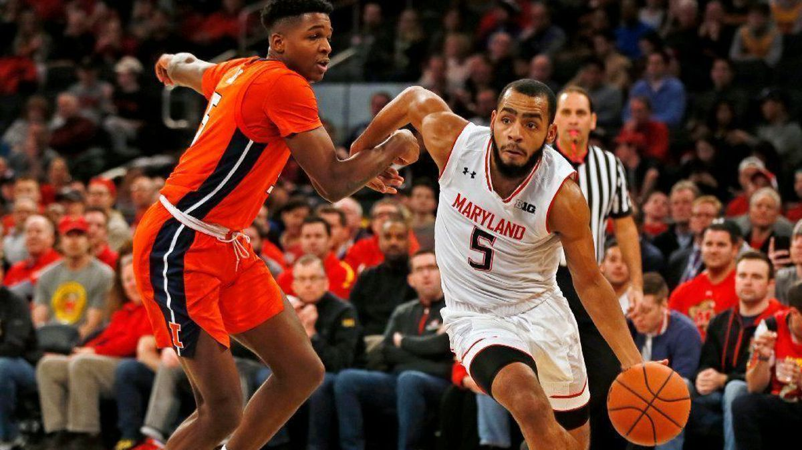
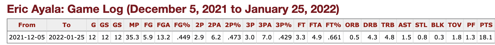

With newfound confidence, Eric Ayala has a three-point shot Maryland men’s basketball can depend on 
Crouched over with the ball at hand, just inches away from the Rutgers midcourt logo, Eric Ayala had a variety of options. Julian Reese trotted to the top of the key to set a screen for his guard, leaving Ayala with enough space to take his pick on how to attack the defense.
A pick and roll play initiation, an isolation move or simply giving up possession to a teammate and finding space off the ball, would have been particularly more ideal decisions for Ayala to make.
But Ayala had the confidence to rise up and launch a 30-footer. The gall to find the bottom of the net and extend a strong double-digit lead against the Scarlet Knights in perhaps the most difficult fashion.
“Man, that one I hit today. That was deep,” Ayala said of his long range triple at Rutgers after the game. Fatts Russell, who was beside him, guffawed in agreement. “[It’s] just confidence, pretty much … Just going with the game, going with the flow of the game as it was coming — being aggressive.”
This season, that brand of aggressiveness is new for Ayala. He’d been the top scorer before, the number one option, the leader, but he’s never shot like this.
“Sometimes he shocks us with the shots he makes,” Donta Scott said. “He does it in practice as well. He extends maybe 15 feet beyond the line … because he knows those are shots that he can make.”
In the years that preceded his senior season, Ayala was the type of player to find his spot off the ball and take open, high percentage looks and occasionally drive to the rim for easier baskets.
In his first three seasons, Ayala took a relatively conservative approach to the game. He played under the shadow of Anthony Cowan Jr. for two years and later shared offensive responsibilities with Aaron Wiggins. But as he got better and drew more demanding defensive game plans, Ayala had to find new ways to score.
Before the 2021-22 season, a shot like his fourth made three at Rutgers would have never been taken, and if it was, it likely wouldn’t have gone in.
So what’s changed? Ayala says his success from deep this season is merely a product of improved confidence. He’d always been practicing the boldest of shots since before college, hurling 30-footers under the tutelage of his former mentor, and former professional hooper AJ English.
“[English] had us shooting back there before Steph Curry,” Ayala said. “It was something I never tried intentionally [in-game] … it’s just a rhythm thing. I’m a little confident and efficient with it. If I didn’t make a lot of them I wouldn’t shoot … from back there.”
Ayala broke out on the college scene as a role player shooting 40% from three on four attempts per game, a product of his light role as a spot-shooter on a team brimming with talent. He suffered a brutal sophomore slump and dropped to 27% from three under the weight of significantly heightened expectations. And he most recently jumped closer to average with a 33% mark from range on six attempts per contest last season, as the team’s leading scorer (15.1 points per game).
This season, once again, as the leading scorer (15.4 points per game) and at some points the sole focus of the offense, Ayala has managed to record a relatively impressive three-point percentage (35%) while taking more threes total (seven per game) and more threes of particularly difficult variety.
His barrage of threes (five and a career-high 26 points) off the dribble in the face of pestering on-ball defender Chase Audige of Northwestern in a double overtime nail-biter practically willed Maryland to victory.
His transition threes amidst a single-man, second half emergence, nearly thrusted the Terps past a Big Ten powerhouse in Wisconsin. His step back three against Michigan State started Maryland’s admirably long upset bid going. Ayala, with the help of Russell, used his three — off the dribble, in transition and from deep — to help grant Maryland its most recent win at Rutgers.
All of this and more was accomplished while boasting a top 25 three-point average among guards in the Big Ten. The Rutgers game capped off a streak in which he shot 42% from three while attempting seven triples per game, an average that made him a top 10 three-point shooter in the league.
Confidence is what he says makes it all possible.
At this declining juncture, a dash of confidence for both the Terps and Ayala to dig themselves out of their respective ruts is crucial. Since Rutgers, Ayala has converted five of his last 24 three-point attempts, a large part of Maryland’s three game losing skid that began after that momentous night at Piscataway.
Without confidence, from Ayala or the team, an unceremonious finish is certainly a possibility. And Maryland’s first losing season since 1993 is certainly probable. Without it, the sense that a season with high moments and oftentimes brow-raising statistics fell short of its true potential could really be actualized.
At the very least, this year has demonstrated how much Ayala’s shot has changed, and how it has the ability to alter Maryland’s fortunes.
“He’s making tough threes, he’s making challenging threes,” interim head coach Danny Manning said. “That speaks to his confidence level and the work that he puts in and the trust that he has in his skill set. And the belief and trust that we have in him as well … We don’t want him to be bashful.”